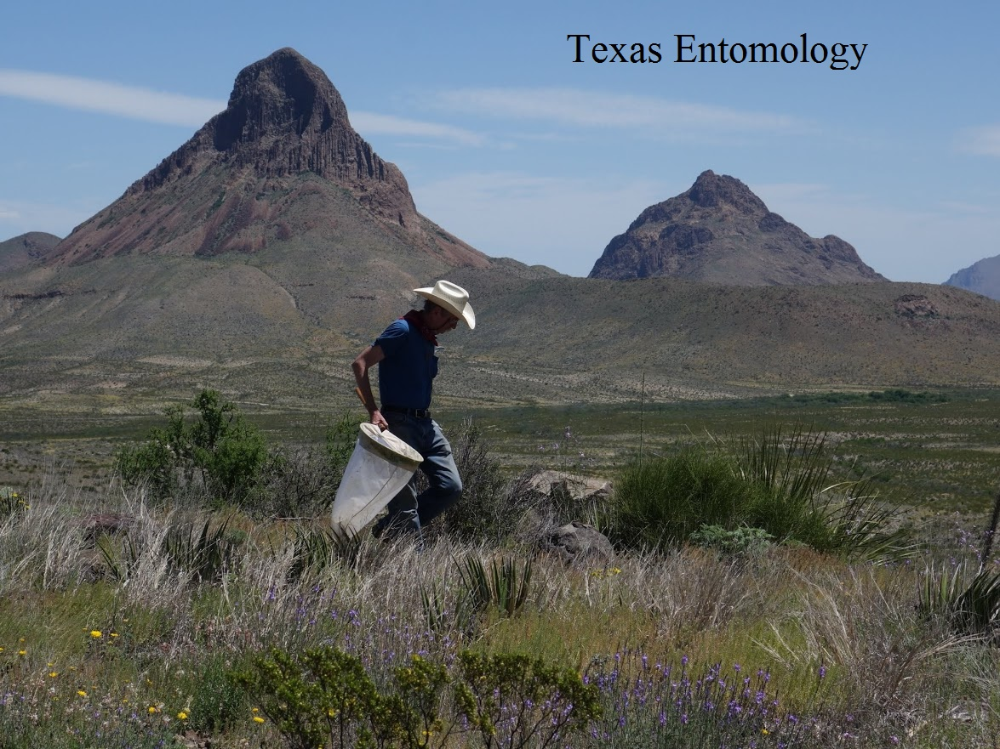

Texas Entomology
Compiled by Mike Quinn
Highlights of the Rio Grande Valley Entomofauna
Beetles
Blister Beetles
Buprestid Beetles
Clerid Beetles
Fireflies
Lady Beetles
Longhorn Beetles
Leaf Beetles
Weevils
Beetle Collecting Pix
Bibliography
Travis Co. Beetles
More Beetle Resourses
Butterfly and Moth
Black Witch
-
Owl Moth
Checklists
Monarchs
More Lep Links
Papers
Plants
Top Ten
TX-Butterfly Listserv
True Bugs and Allies
Assassin Bugs
Cicadas
Leaf-footed Bugs & Allies
Plant Bugs
Planthoppers
Seed Bugs & Allies
Stink Bugs
Treehoppers
Other Resources
Biodiversity
Collecting
-
Techniques
Databases
Field Guides
Maps
Orgs & Individuals
Problem Inverts
TX-Ento Listserv
16 July 2022 ©
Mike Quinn
-
New Pages

A Texas Entomologist in west Texas